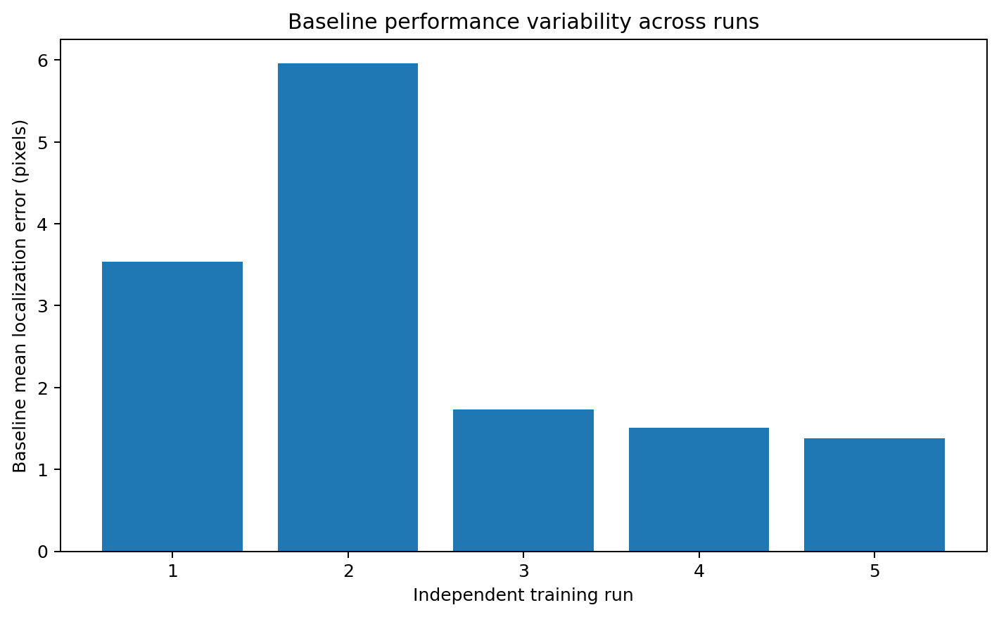
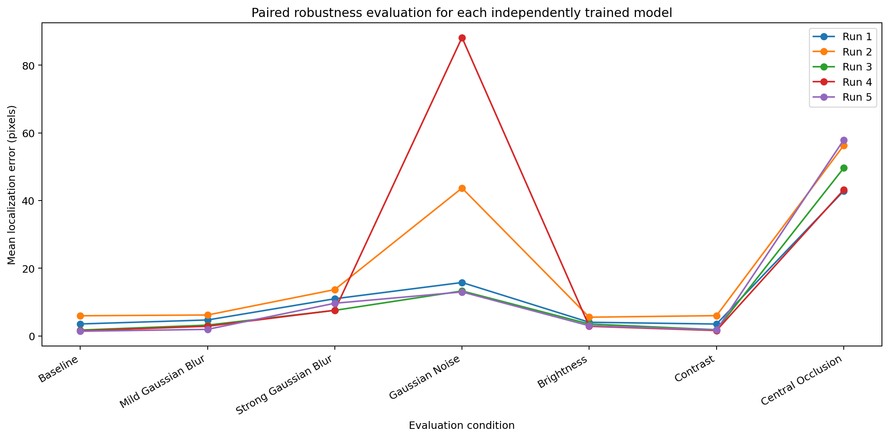
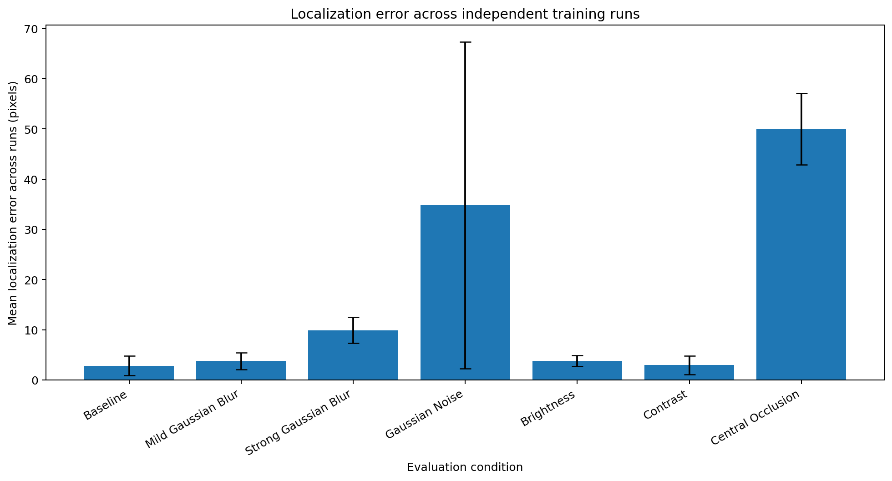
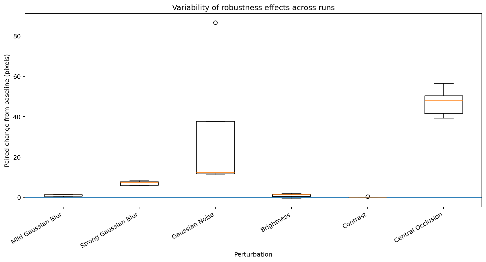
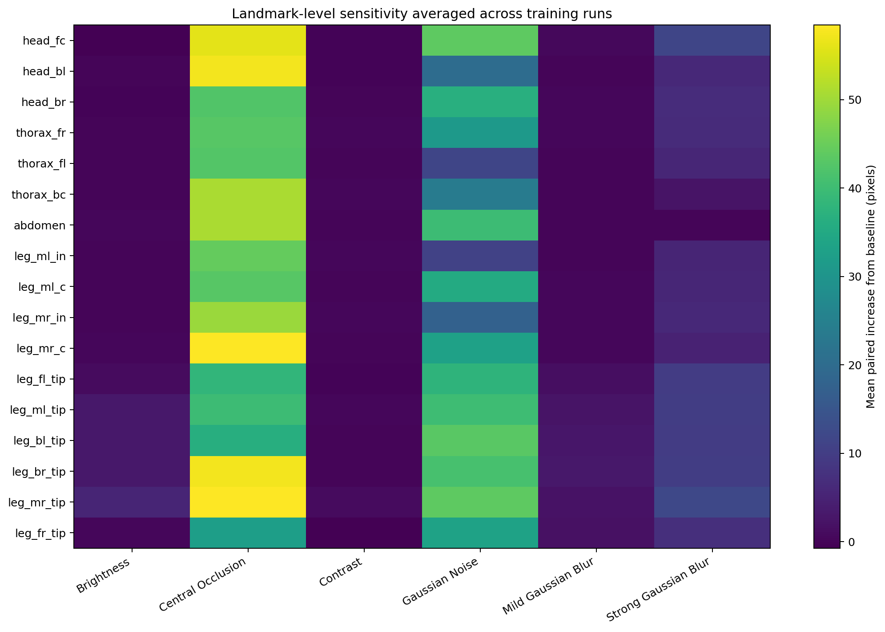

5 independently initialized U-Net models were evaluated on a fixed validation split. Every perturbation was compared with the same model's baseline.
| Run | Seed | Condition | Mean error (px) | Median error (px) | PCK@5 (%) | PCK@10 (%) |
|---|---|---|---|---|---|---|
| 1 | 11 | Baseline | 3.53587 | 1.48066 | 81.76610 | 89.89800 |
| 1 | 11 | Mild Gaussian Blur | 4.71297 | 2.14724 | 73.70407 | 84.54660 |
| 1 | 11 | Strong Gaussian Blur | 10.98449 | 8.09577 | 37.09655 | 57.45424 |
| 1 | 11 | Gaussian Noise | 15.79043 | 7.22176 | 40.61758 | 58.05505 |
| 1 | 11 | Brightness | 4.03450 | 1.58400 | 79.32094 | 91.84016 |
| 1 | 11 | Contrast | 3.51243 | 1.43690 | 84.23921 | 91.86810 |
| 1 | 11 | Central Occlusion | 42.85181 | 41.48436 | 0.05589 | 0.18164 |
| 2 | 22 | Baseline | 5.95764 | 1.91967 | 63.40646 | 75.11527 |
| 2 | 22 | Mild Gaussian Blur | 6.18211 | 2.45058 | 61.05910 | 75.25500 |
| 2 | 22 | Strong Gaussian Blur | 13.69613 | 9.95946 | 33.79908 | 50.17465 |
| 2 | 22 | Gaussian Noise | 43.70377 | 17.62824 | 22.06232 | 32.10843 |
| 2 | 22 | Brightness | 5.53270 | 1.77274 | 66.66201 | 76.79195 |
| 2 | 22 | Contrast | 5.99496 | 1.94973 | 64.24480 | 75.21308 |
| 2 | 22 | Central Occlusion | 56.31467 | 47.63399 | 0.00000 | 0.06986 |
| 3 | 33 | Baseline | 1.72934 | 1.15465 | 97.05184 | 98.40715 |
| 3 | 33 | Mild Gaussian Blur | 3.19634 | 1.55758 | 83.12142 | 95.43105 |
| 3 | 33 | Strong Gaussian Blur | 7.55329 | 3.17784 | 60.82157 | 73.49448 |
| 3 | 33 | Gaussian Noise | 13.29095 | 2.73689 | 58.87942 | 64.71985 |
| 3 | 33 | Brightness | 3.52228 | 1.72216 | 75.22705 | 94.32723 |
| 3 | 33 | Contrast | 1.82486 | 1.13072 | 97.02389 | 98.16962 |
| 3 | 33 | Central Occlusion | 49.63641 | 44.51187 | 0.00000 | 0.08383 |
| 4 | 44 | Baseline | 1.50947 | 0.95664 | 97.13567 | 98.47702 |
| 4 | 44 | Mild Gaussian Blur | 2.85314 | 1.34767 | 85.38494 | 93.89409 |
| 4 | 44 | Strong Gaussian Blur | 7.58536 | 4.84160 | 51.22258 | 69.51237 |
| 4 | 44 | Gaussian Noise | 88.18502 | 103.34831 | 7.86642 | 13.23180 |
| 4 | 44 | Brightness | 2.84501 | 1.39577 | 82.04555 | 96.77239 |
| 4 | 44 | Contrast | 1.59291 | 1.01885 | 96.47897 | 98.16962 |
| 4 | 44 | Central Occlusion | 43.17675 | 34.11606 | 0.09781 | 0.50300 |
| 5 | 55 | Baseline | 1.37878 | 0.85951 | 97.13567 | 98.63071 |
| 5 | 55 | Mild Gaussian Blur | 1.93842 | 1.06973 | 93.89409 | 97.16362 |
| 5 | 55 | Strong Gaussian Blur | 9.65361 | 4.85575 | 50.67766 | 69.38661 |
| 5 | 55 | Gaussian Noise | 12.99711 | 4.29556 | 51.92120 | 62.13497 |
| 5 | 55 | Brightness | 3.00323 | 1.22881 | 87.73229 | 93.44697 |
| 5 | 55 | Contrast | 1.75367 | 1.01577 | 95.82227 | 97.61073 |
| 5 | 55 | Central Occlusion | 57.94437 | 57.85213 | 0.18164 | 0.26547 |
| Condition | Mean error across runs (px) | SD across runs (px) | Mean PCK@5 across runs (%) | SD PCK@5 across runs | Mean paired change vs baseline (px) | SD paired change (px) | Runs with increased error (%) |
|---|---|---|---|---|---|---|---|
| Baseline | 2.82222 | 1.95840 | 87.29915 | 14.91731 | 0.00000 | 0.00000 | NaN |
| Mild Gaussian Blur | 3.77660 | 1.67568 | 79.43272 | 12.53569 | 0.95438 | 0.53678 | 100.0 |
| Strong Gaussian Blur | 9.89458 | 2.57449 | 46.72349 | 11.11701 | 7.07236 | 1.07037 | 100.0 |
| Gaussian Noise | 34.79346 | 32.51387 | 36.26939 | 21.11675 | 31.97124 | 32.57857 | 100.0 |
| Brightness | 3.78754 | 1.08172 | 78.19757 | 7.88785 | 0.96533 | 0.92292 | 80.0 |
| Contrast | 2.93577 | 1.87922 | 87.56183 | 14.07129 | 0.11355 | 0.15339 | 80.0 |
| Central Occlusion | 49.98480 | 7.08471 | 0.06707 | 0.07615 | 47.16258 | 6.90912 | 100.0 |

Figure 1. Baseline variability across runs.

Figure 2. Paired condition performance.

Figure 3. Mean ± SD across runs.
| Run | Seed | Condition | Baseline mean error (px) | Perturbed mean error (px) | Absolute change (px) | Relative change (%) |
|---|---|---|---|---|---|---|
| 1 | 11 | Mild Gaussian Blur | 3.53587 | 4.71297 | 1.17710 | 33.29037 |
| 1 | 11 | Strong Gaussian Blur | 3.53587 | 10.98449 | 7.44862 | 210.65873 |
| 1 | 11 | Gaussian Noise | 3.53587 | 15.79043 | 12.25456 | 346.57852 |
| 1 | 11 | Brightness | 3.53587 | 4.03450 | 0.49863 | 14.10213 |
| 1 | 11 | Contrast | 3.53587 | 3.51243 | -0.02343 | -0.66278 |
| 1 | 11 | Central Occlusion | 3.53587 | 42.85181 | 39.31594 | 1111.91714 |
| 2 | 22 | Mild Gaussian Blur | 5.95764 | 6.18211 | 0.22447 | 3.76771 |
| 2 | 22 | Strong Gaussian Blur | 5.95764 | 13.69613 | 7.73850 | 129.89197 |
| 2 | 22 | Gaussian Noise | 5.95764 | 43.70377 | 37.74613 | 633.57525 |
| 2 | 22 | Brightness | 5.95764 | 5.53270 | -0.42494 | -7.13269 |
| 2 | 22 | Contrast | 5.95764 | 5.99496 | 0.03732 | 0.62639 |
| 2 | 22 | Central Occlusion | 5.95764 | 56.31467 | 50.35703 | 845.25133 |
| 3 | 33 | Mild Gaussian Blur | 1.72934 | 3.19634 | 1.46699 | 84.82936 |
| 3 | 33 | Strong Gaussian Blur | 1.72934 | 7.55329 | 5.82394 | 336.77165 |
| 3 | 33 | Gaussian Noise | 1.72934 | 13.29095 | 11.56160 | 668.55401 |
| 3 | 33 | Brightness | 1.72934 | 3.52228 | 1.79294 | 103.67722 |
| 3 | 33 | Contrast | 1.72934 | 1.82486 | 0.09551 | 5.52309 |
| 3 | 33 | Central Occlusion | 1.72934 | 49.63641 | 47.90706 | 2770.24348 |
| 4 | 44 | Mild Gaussian Blur | 1.50947 | 2.85314 | 1.34367 | 89.01639 |
| 4 | 44 | Strong Gaussian Blur | 1.50947 | 7.58536 | 6.07589 | 402.51873 |
| 4 | 44 | Gaussian Noise | 1.50947 | 88.18502 | 86.67555 | 5742.12514 |
| 4 | 44 | Brightness | 1.50947 | 2.84501 | 1.33554 | 88.47781 |
| 4 | 44 | Contrast | 1.50947 | 1.59291 | 0.08344 | 5.52797 |
| 4 | 44 | Central Occlusion | 1.50947 | 43.17675 | 41.66728 | 2760.39451 |
| 5 | 55 | Mild Gaussian Blur | 1.37878 | 1.93842 | 0.55964 | 40.58993 |
| 5 | 55 | Strong Gaussian Blur | 1.37878 | 9.65361 | 8.27483 | 600.15753 |
| 5 | 55 | Gaussian Noise | 1.37878 | 12.99711 | 11.61833 | 842.65518 |
| 5 | 55 | Brightness | 1.37878 | 3.00323 | 1.62445 | 117.81834 |
| 5 | 55 | Contrast | 1.37878 | 1.75367 | 0.37490 | 27.19045 |
| 5 | 55 | Central Occlusion | 1.37878 | 57.94437 | 56.56560 | 4102.59334 |

Figure 4. Paired robustness changes across runs.
| Condition | Landmark | Mean error across runs (px) | SD across runs (px) | Mean paired change vs baseline (px) | SD paired change (px) | Runs with increased error (%) |
|---|---|---|---|---|---|---|
| Brightness | leg_mr_tip | 10.34294 | 5.34607 | 5.31902 | 4.26183 | 100.0 |
| Brightness | leg_br_tip | 8.62716 | 1.56707 | 3.18715 | 2.75730 | 80.0 |
| Brightness | leg_ml_tip | 8.03637 | 3.24806 | 3.16344 | 2.25259 | 100.0 |
| Brightness | leg_bl_tip | 9.28865 | 1.82801 | 3.00131 | 2.90383 | 80.0 |
| Brightness | leg_fl_tip | 7.12716 | 4.31605 | 1.08324 | 2.42212 | 60.0 |
| Brightness | leg_fr_tip | 7.37124 | 4.08763 | 0.39539 | 4.08592 | 60.0 |
| Brightness | leg_mr_c | 1.52698 | 0.22191 | 0.28921 | 0.14321 | 100.0 |
| Brightness | abdomen | 1.00910 | 0.22418 | 0.23704 | 0.25463 | 80.0 |
| Brightness | leg_mr_in | 1.32141 | 0.24575 | 0.17251 | 0.23758 | 80.0 |
| Brightness | leg_ml_c | 1.52789 | 0.32712 | 0.16763 | 0.38162 | 60.0 |
| Brightness | head_bl | 1.53491 | 0.72480 | 0.08429 | 0.42742 | 60.0 |
| Brightness | leg_ml_in | 1.06189 | 0.15024 | 0.06986 | 0.12675 | 60.0 |
| Brightness | thorax_fr | 1.31540 | 0.53466 | 0.06370 | 0.28332 | 40.0 |
| Brightness | thorax_bc | 0.98987 | 0.22091 | 0.01481 | 0.04283 | 40.0 |
| Brightness | thorax_fl | 0.98238 | 0.23029 | 0.00709 | 0.25283 | 40.0 |
| Brightness | head_br | 1.02545 | 0.28935 | -0.13126 | 0.32044 | 60.0 |
| Brightness | head_fc | 1.29946 | 0.93552 | -0.71391 | 1.59525 | 40.0 |
| Central Occlusion | leg_mr_c | 59.68631 | 10.32630 | 58.44855 | 10.44029 | 100.0 |
| Central Occlusion | leg_mr_tip | 63.35020 | 22.12422 | 58.32628 | 25.35789 | 100.0 |
| Central Occlusion | leg_br_tip | 62.93638 | 22.51969 | 57.49638 | 24.37824 | 100.0 |
| Central Occlusion | head_bl | 58.90725 | 32.61538 | 57.45662 | 32.81826 | 100.0 |
| Central Occlusion | head_fc | 58.01277 | 41.59648 | 55.99939 | 39.46995 | 100.0 |
| Central Occlusion | thorax_bc | 51.88603 | 11.58605 | 50.91097 | 11.66021 | 100.0 |
| Central Occlusion | abdomen | 51.61171 | 23.96733 | 50.83965 | 23.99180 | 100.0 |
| Central Occlusion | leg_mr_in | 50.79702 | 8.56336 | 49.64812 | 8.60486 | 100.0 |
| Central Occlusion | leg_ml_in | 45.48438 | 10.14400 | 44.49235 | 10.13681 | 100.0 |
| Central Occlusion | thorax_fr | 44.44084 | 6.87718 | 43.18914 | 6.59580 | 100.0 |
| Central Occlusion | leg_ml_c | 44.36511 | 7.42608 | 43.00486 | 7.52511 | 100.0 |
| Central Occlusion | thorax_fl | 43.63604 | 9.17134 | 42.66075 | 9.10082 | 100.0 |
| Central Occlusion | head_br | 43.62628 | 9.97683 | 42.46958 | 9.55776 | 100.0 |
| Central Occlusion | leg_ml_tip | 44.73832 | 17.28266 | 39.86539 | 13.74747 | 100.0 |
| Central Occlusion | leg_fl_tip | 44.23804 | 18.35958 | 38.19412 | 13.67153 | 100.0 |
| Central Occlusion | leg_bl_tip | 42.65906 | 19.44639 | 36.37172 | 22.40358 | 100.0 |
| Central Occlusion | leg_fr_tip | 39.36583 | 10.66403 | 32.38998 | 10.92314 | 100.0 |
| Contrast | leg_mr_tip | 6.04859 | 5.99862 | 1.02467 | 1.89789 | 60.0 |
| Contrast | leg_mr_in | 1.49011 | 0.50852 | 0.34121 | 0.37347 | 100.0 |
| Contrast | thorax_fr | 1.51765 | 0.70123 | 0.26595 | 0.55084 | 80.0 |
| Contrast | thorax_bc | 1.19682 | 0.29572 | 0.22177 | 0.13112 | 100.0 |
| Contrast | leg_ml_in | 1.21362 | 0.32794 | 0.22159 | 0.23124 | 100.0 |
| Contrast | leg_ml_tip | 5.08242 | 4.70514 | 0.20949 | 0.59997 | 60.0 |
| Contrast | leg_mr_c | 1.38257 | 0.24186 | 0.14480 | 0.22957 | 80.0 |
| Contrast | leg_bl_tip | 6.40723 | 3.73744 | 0.11989 | 0.51135 | 60.0 |
| Contrast | abdomen | 0.88905 | 0.12563 | 0.11699 | 0.11777 | 80.0 |
| Contrast | thorax_fl | 1.08397 | 0.35194 | 0.10869 | 0.07982 | 100.0 |
| Contrast | leg_br_tip | 5.50921 | 3.09102 | 0.06920 | 0.66981 | 40.0 |
| Contrast | leg_ml_c | 1.41982 | 0.16216 | 0.05956 | 0.28937 | 60.0 |
| Contrast | head_br | 1.14708 | 0.36790 | -0.00963 | 0.27995 | 40.0 |
| Contrast | leg_fl_tip | 6.00170 | 6.11014 | -0.04222 | 1.36116 | 60.0 |
| Contrast | head_bl | 1.40425 | 0.29563 | -0.04637 | 0.35583 | 40.0 |
| Contrast | head_fc | 1.86258 | 2.23559 | -0.15079 | 0.28368 | 60.0 |
| Contrast | leg_fr_tip | 6.25136 | 5.85495 | -0.72449 | 1.53498 | 40.0 |
| Gaussian Noise | leg_mr_tip | 48.76034 | 25.55389 | 43.73642 | 25.83989 | 100.0 |
| Gaussian Noise | head_fc | 45.71061 | 49.60036 | 43.69724 | 48.69862 | 100.0 |
| Gaussian Noise | leg_bl_tip | 49.59801 | 35.20160 | 43.31067 | 37.05142 | 100.0 |
| Gaussian Noise | leg_br_tip | 46.69536 | 48.75825 | 41.25535 | 50.60804 | 100.0 |
| Gaussian Noise | leg_ml_tip | 44.96233 | 41.05223 | 40.08940 | 42.06972 | 100.0 |
| Gaussian Noise | abdomen | 40.55868 | 55.46418 | 39.78662 | 55.45722 | 100.0 |
| Gaussian Noise | leg_fl_tip | 43.71827 | 32.63992 | 37.67435 | 31.97867 | 100.0 |
| Gaussian Noise | head_br | 37.74265 | 44.64782 | 36.58594 | 44.51656 | 100.0 |
| Gaussian Noise | leg_ml_c | 36.74996 | 47.67211 | 35.38970 | 47.58351 | 100.0 |
| Gaussian Noise | leg_fr_tip | 40.24660 | 33.20788 | 33.27075 | 33.44099 | 100.0 |
| Gaussian Noise | leg_mr_c | 34.47002 | 54.00590 | 33.23225 | 53.97009 | 100.0 |
| Gaussian Noise | thorax_fr | 32.21289 | 35.23314 | 30.96119 | 35.26750 | 100.0 |
| Gaussian Noise | thorax_bc | 24.96355 | 43.74426 | 23.98849 | 43.77352 | 100.0 |
| Gaussian Noise | head_bl | 21.62401 | 25.62042 | 20.17338 | 25.61984 | 100.0 |
| Gaussian Noise | leg_mr_in | 18.83797 | 23.20500 | 17.68906 | 23.31688 | 100.0 |
| Gaussian Noise | thorax_fl | 12.58460 | 19.73213 | 11.60932 | 19.45132 | 100.0 |
| Gaussian Noise | leg_ml_in | 12.05292 | 13.91300 | 11.06089 | 13.88011 | 100.0 |
| Mild Gaussian Blur | leg_br_tip | 8.43128 | 1.61604 | 2.99128 | 2.00740 | 80.0 |
| Mild Gaussian Blur | leg_bl_tip | 9.04242 | 2.43333 | 2.75508 | 2.53246 | 80.0 |
| Mild Gaussian Blur | leg_ml_tip | 7.18757 | 4.22262 | 2.31464 | 2.44644 | 100.0 |
| Mild Gaussian Blur | leg_mr_tip | 7.26579 | 3.82667 | 2.24187 | 2.51773 | 80.0 |
| Mild Gaussian Blur | leg_fr_tip | 8.80919 | 6.21336 | 1.83334 | 1.34235 | 100.0 |
| Mild Gaussian Blur | leg_fl_tip | 7.45439 | 5.81829 | 1.41047 | 0.69673 | 100.0 |
| Mild Gaussian Blur | head_fc | 2.63153 | 3.01288 | 0.61815 | 0.64895 | 100.0 |
| Mild Gaussian Blur | head_br | 1.54949 | 0.95916 | 0.39279 | 0.50824 | 80.0 |
| Mild Gaussian Blur | leg_mr_c | 1.57053 | 0.27259 | 0.33276 | 0.22548 | 100.0 |
| Mild Gaussian Blur | leg_mr_in | 1.46605 | 0.62755 | 0.31715 | 0.50295 | 80.0 |
| Mild Gaussian Blur | thorax_fr | 1.55165 | 0.93515 | 0.29995 | 0.65223 | 60.0 |
| Mild Gaussian Blur | leg_ml_c | 1.62230 | 0.36094 | 0.26204 | 0.23492 | 80.0 |
| Mild Gaussian Blur | leg_ml_in | 1.17694 | 0.19417 | 0.18491 | 0.13435 | 100.0 |
| Mild Gaussian Blur | thorax_fl | 1.12288 | 0.44279 | 0.14759 | 0.16154 | 80.0 |
| Mild Gaussian Blur | thorax_bc | 1.04794 | 0.16826 | 0.07288 | 0.17550 | 80.0 |
| Mild Gaussian Blur | abdomen | 0.80615 | 0.06619 | 0.03409 | 0.09092 | 80.0 |
| Mild Gaussian Blur | head_bl | 1.46603 | 0.33579 | 0.01540 | 0.52677 | 20.0 |
| Strong Gaussian Blur | leg_mr_tip | 17.20900 | 4.40747 | 12.18508 | 8.96280 | 80.0 |
| Strong Gaussian Blur | head_fc | 13.54816 | 17.27731 | 11.53479 | 16.94119 | 100.0 |
| Strong Gaussian Blur | leg_br_tip | 15.50137 | 3.42333 | 10.06137 | 6.71319 | 100.0 |
| Strong Gaussian Blur | leg_ml_tip | 14.80919 | 3.87518 | 9.93626 | 7.91576 | 80.0 |
| Strong Gaussian Blur | leg_bl_tip | 16.19375 | 4.85847 | 9.90641 | 7.76330 | 80.0 |
| Strong Gaussian Blur | leg_fl_tip | 15.83944 | 7.95442 | 9.79552 | 2.30886 | 100.0 |
| Strong Gaussian Blur | leg_fr_tip | 14.28056 | 5.83058 | 7.30471 | 2.63498 | 100.0 |
| Strong Gaussian Blur | head_br | 7.90299 | 6.82599 | 6.74628 | 6.32212 | 100.0 |
| Strong Gaussian Blur | thorax_fr | 7.77044 | 6.26434 | 6.51874 | 6.00571 | 80.0 |
| Strong Gaussian Blur | leg_mr_in | 7.31764 | 2.99338 | 6.16874 | 3.02096 | 100.0 |
| Strong Gaussian Blur | head_bl | 7.48735 | 7.56943 | 6.03672 | 7.74839 | 80.0 |
| Strong Gaussian Blur | thorax_fl | 6.66837 | 6.34910 | 5.69309 | 6.15764 | 100.0 |
| Strong Gaussian Blur | leg_ml_c | 6.93785 | 5.20643 | 5.57759 | 5.17315 | 100.0 |
| Strong Gaussian Blur | leg_ml_in | 6.40103 | 6.10217 | 5.40900 | 6.03548 | 100.0 |
| Strong Gaussian Blur | leg_mr_c | 6.10756 | 1.57780 | 4.86979 | 1.64989 | 100.0 |
| Strong Gaussian Blur | thorax_bc | 3.33934 | 1.45974 | 2.36429 | 1.50974 | 100.0 |
| Strong Gaussian Blur | abdomen | 0.89373 | 0.19596 | 0.12167 | 0.23652 | 60.0 |

Figure 5. Landmark robustness heatmap.
| Condition | Mean paired change (px) | SD paired change (px) | Paired t-test p-value | One-sided Wilcoxon p-value | Runs increased / total |
|---|---|---|---|---|---|
| Mild Gaussian Blur | 0.95438 | 0.53678 | 0.01646 | 0.03125 | 5/5 |
| Strong Gaussian Blur | 7.07236 | 1.07037 | 0.00012 | 0.03125 | 5/5 |
| Gaussian Noise | 31.97124 | 32.57857 | 0.09323 | 0.03125 | 5/5 |
| Brightness | 0.96533 | 0.92292 | 0.07948 | 0.06250 | 4/5 |
| Contrast | 0.11355 | 0.15339 | 0.17321 | 0.06250 | 4/5 |
| Central Occlusion | 47.16258 | 6.90912 | 0.00011 | 0.03125 | 5/5 |